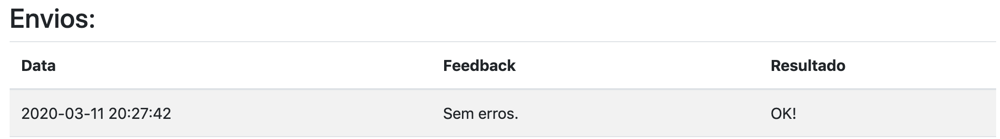
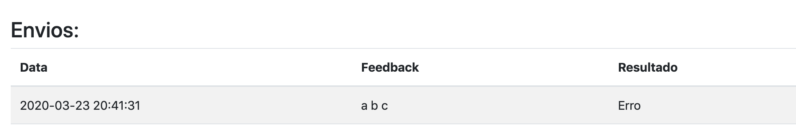

Guia para os alunos
Como usar
http://localhost:80- Link de acesso.Dashboard lateral esquerda- Escolher desse menu o desafio que queira responder.Escolher Arquivo- Botão para selecionar o código fonte com sua solução.Enviar- Botão de envio.
Resposta correta
Caso sua resposta esteja correta, o Feedback e o Resultado devem sair como na imagem a seguir:

Resposta errada
Caso sua resposta esteja errada, o Feedback e o Resultado devem sair como na imagem a seguir:
